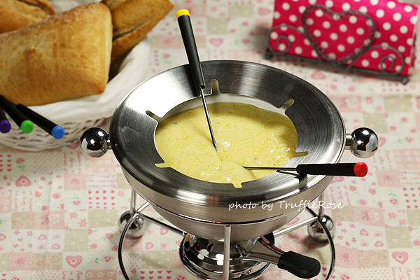
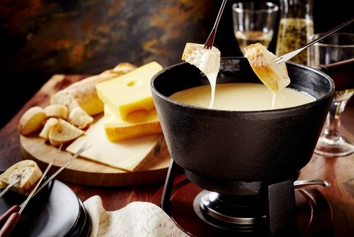
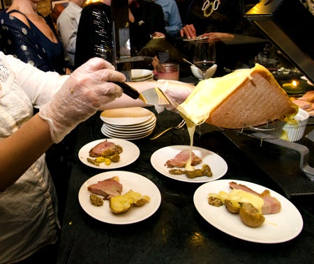
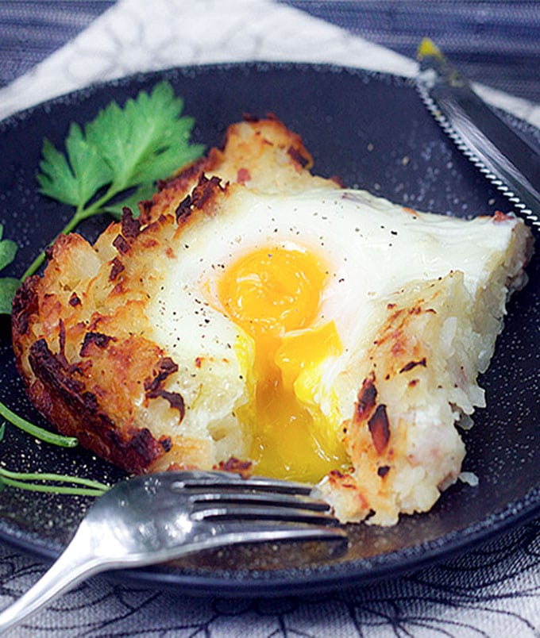
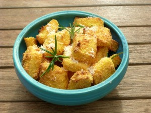
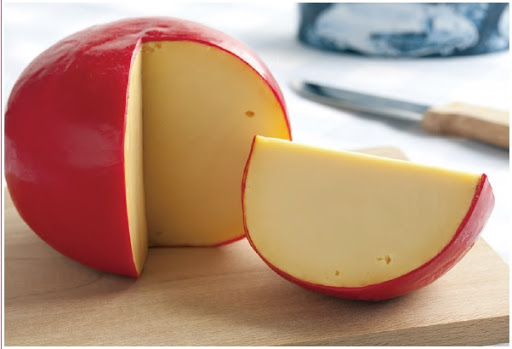
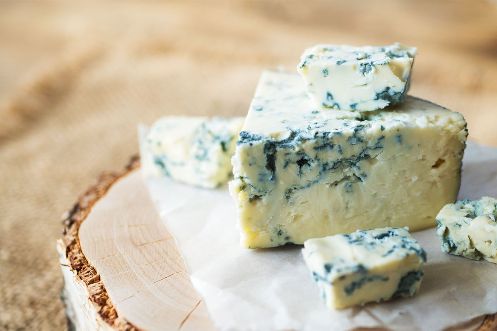
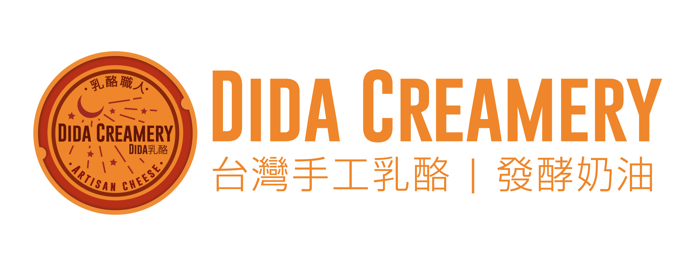
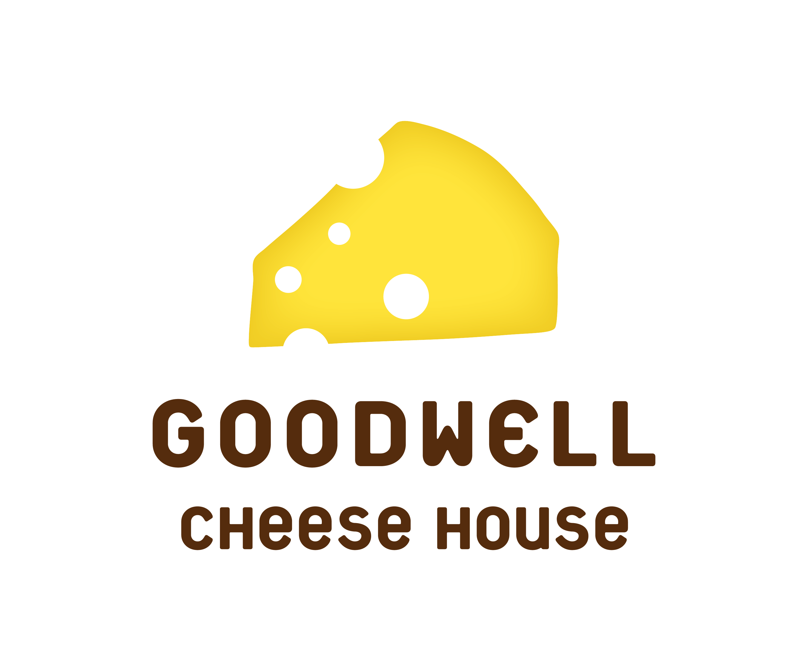

Tonight, I want to order some... cheese?

Cheddar、Parmesan、Parmigiano Cheese
因為鹹度高、口感厚實，一般常刨成粉狀，加在沙拉、義大利麵上面，添加食物的風味，有時也會拿來做起士火鍋
Vincent、Gouda、Edam Cheese
切片後可直接搭配酒類、茶類品嘗，容易入口，或是刨片、切丁入菜都很合適，用途極廣。
Chevrette Cheese
因為細分種類還是有很多種，所以用途極廣，最常見的是加在沙拉裡吃
Taleggio Cheese
外國人的吃法通常會直接配酒，以品嘗它的獨特氣味，台灣人較難適應此味道，所以會用在加熱料理上，降低氣味的衝擊
Camembert、Brie Cheese
因為口感較柔順，可以直接搭配水果、紅酒、咖啡一起吃
Gorgonzola Cheese
常會加在義大利麵醬、沙拉醬料中使用，或是添加在新鮮的沙拉裡，直接配茶也是一種吃法。
Mozzarella、Mascorpone、Cream Cheese
新鮮軟度佳、沒有鹹度，通常可以直接入菜拌沙拉吃，切片或是切丁都很合適，如優格的吃法拌入新鮮水果、果醬，甜食吃法也不錯。 Cream Cheese則常加在焗烤料理中。
每到5旬節在英格蘭西南部格魯斯特郡（Gloucestershire）的古柏山丘上頭，一顆藍紅緞帶裝飾的圓起司從幾近垂直的山頭快速滾下，後頭一群男子們連滾帶爬的追逐著，當圓起司衝破終點線，有個男子箭步追上，觀望的民眾們終於從緊張轉為歡呼，滾起司大賽的冠軍就此產生！

幾世紀前瑞士人以乾燥法保存麵包和起司，冬天時乾掉的起司添酒加熱成液狀，再以乾掉的麵包蘸取食用，這就是起司風度鍋的起源。19世紀時，瑞士商人為了推廣瑞士起司和酒大力提倡起司鍋，1955年所謂的即溶起司鍋材料正式登場。 一般而言，起司醬的材料比例為100毫升的不甜白酒搭配200公克的起司，有些地方會再添加少許櫻桃白蘭地（kirsch）。所使用的起司以半硬質（如艾蒙達起司）和硬質（如格魯耶爾起司）為主。比例隨個人喜好，不要偏差太大即可。
起司火鍋是瑞士各類火鍋中，最具傳統性也是最受歡迎的。正統的起司鍋湯底要用白酒熬煮，再放入特定的起司加熱至濃稠狀，有的地方會添加佐味的香料，包括櫻桃酒、大蒜、洋蔥，甚至是磨菇。吃的時候，先把麵包撕成小塊，然後用叉子叉上一小塊麵包，放入起司鍋內沾著熱起司吃；也可以用馬鈴薯取代麵包，另具獨特的風味口感。
烤起司可是瑞士人的最愛呢！如果說Fondue是煮起司的話，那Raclette就是把起司烤來吃了。Raclette是將切片的起司放在烤盤上加熱融化，再把它淋在麵包上或是馬鈴薯上食用。有的地區會搭配醃酸黃瓜或洋蔥一起吃，也可以灑點胡椒調味。
這道馬鈴薯餅是瑞是最普遍的家常菜之一；它先是把馬鈴薯煮熟之後，削成片狀再油煎來食用。通常要煎到有點焦焦的咖啡色，咬起來才會有脆硬的誘人口感。在瑞士的餐廳裡，還有多種口味可供選擇；搭配煎蛋或是火腿，也是很受歡迎的組合。超市裡有賣現成的調理包，每個人都可以買回家自己煎來吃，非常方便。
玉米糕在南部的義大利語區是很家常的一道菜餚。作法是把玉米磨成粉末狀，再加上水、鹽巴、牛奶調煮而成。最普遍的吃法是切成塊煎來吃，通常會搭配燉肉等菜餚，或是淋上醬汁一起食用。
我與家人第一次嘗試挑選乳酪的地方就是在馬弟瓦特，通常我們都是在家樂福或是7-11購買起司，而且幾乎都是買小包裝的片狀起司 ，所以當我們正式到乳酪店時，眼前盡是琳瑯滿目的起司，經過店員詳細解說，我們也挑選出自己最想嘗試的起司，總共買了兩種: (因為起司都是秤重的，單價真的不便宜) 我與弟弟挑選的是較適合做成焗烤的艾登乳酪，外觀是有一層紅色的蠟，要剝開才能食用。
而媽媽則是選了藍黴乳酪，藍黴乳酪是利用青黴菌與牛奶發酵而成，在這之前我媽媽完全沒聽過藍黴乳酪，只是因為店員說這種入落口味較濃郁，因此出於好奇就直接選擇了它

我們都認為這是一個大膽的嘗試，也都只敢遠看不敢褻玩焉，沒想到媽媽竟然真的特別喜歡藍黴乳酪的風味，經過了好幾天，我也抗拒不了好奇心想品嘗藍黴乳酪到弟是什麼滋味，雖然第一口嚐起來有一種非常強烈的鹹香味，但習慣了之後，就會品嘗到藍黴乳酪那種沙沙的口感，真的蠻獨特的
台灣手工乳酪，可線上訂購 ~ `(' ˇ ')ˊ
 乳酪職人官網店內時常有開"手做起司課"，也可以線上預購起司喔!
Man Mano慢慢弄‧乳酪坊 FB連結以乳酪為起點~運用到美食生活方面
 GoodWell固德威美食生活家官網